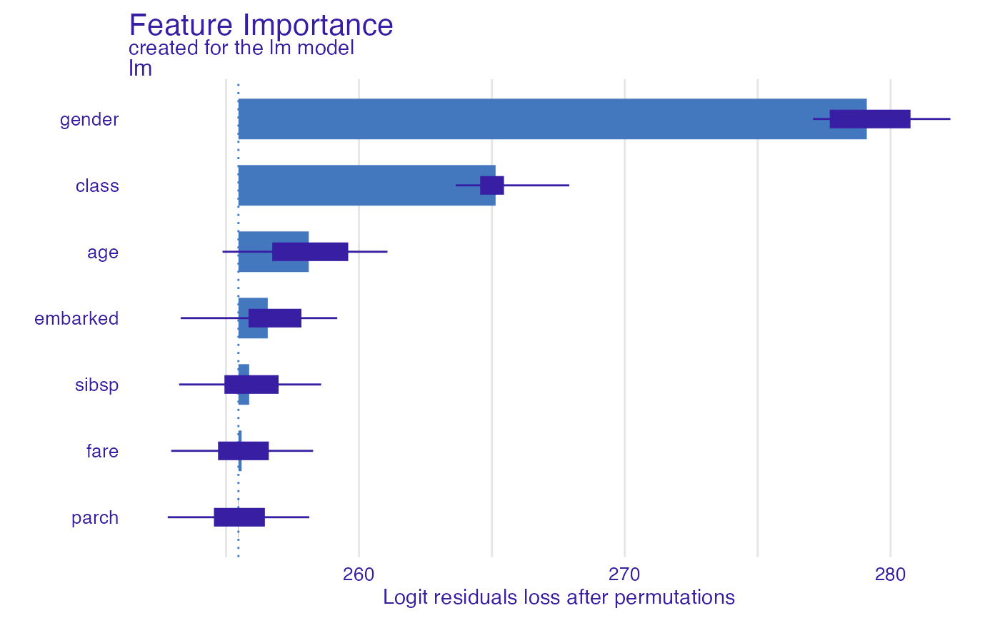
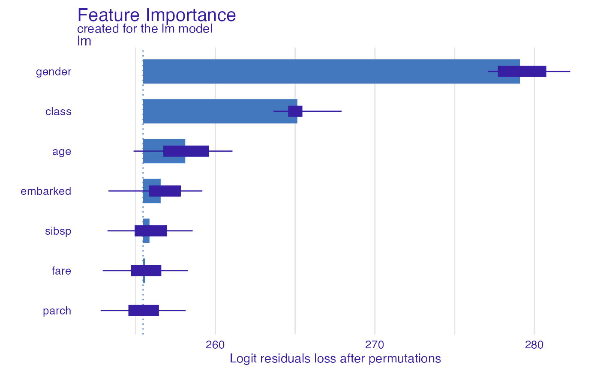

Dataset Level Variable Importance as Change in Loss Function after Variable Permutations
Source:R/model_parts.R
model_parts.RdFrom DALEX version 1.0 this function calls the feature_importance
Find information how to use this function here: https://ema.drwhy.ai/featureImportance.html.
model_parts(
explainer,
loss_function = loss_default(explainer$model_info$type),
...,
type = "variable_importance",
N = n_sample,
n_sample = 1000
)Arguments
- explainer
a model to be explained, preprocessed by the
explainfunction- loss_function
a function that will be used to assess variable importance. By default it is 1-AUC for classification, cross entropy for multilabel classification and RMSE for regression. Custom, user-made loss function should accept two obligatory parameters (observed, predicted), where
observedstates for actual values of the target, whilepredictedfor predicted values. If attribute "loss_accuracy" is associated with function object, then it will be plotted as name of the loss function.- ...
other parameters
- type
character, type of transformation that should be applied for dropout loss.
variable_importanceandrawresults raw drop lossess,ratioreturnsdrop_loss/drop_loss_full_modelwhiledifferencereturnsdrop_loss - drop_loss_full_model- N
number of observations that should be sampled for calculation of variable importance. If
NULLthen variable importance will be calculated on whole dataset (no sampling).- n_sample
alias for
Nheld for backwards compatibility. number of observations that should be sampled for calculation of variable importance.
Value
An object of the class feature_importance.
It's a data frame with calculated average response.
References
Explanatory Model Analysis. Explore, Explain and Examine Predictive Models. https://ema.drwhy.ai/
Examples
# \donttest{
# regression
library("ranger")
apartments_ranger_model <- ranger(m2.price~., data = apartments, num.trees = 50)
explainer_ranger <- explain(apartments_ranger_model, data = apartments[,-1],
y = apartments$m2.price, label = "Ranger Apartments")
#> Preparation of a new explainer is initiated
#> -> model label : Ranger Apartments
#> -> data : 1000 rows 5 cols
#> -> target variable : 1000 values
#> -> predict function : yhat.ranger will be used ( default )
#> -> predicted values : No value for predict function target column. ( default )
#> -> model_info : package ranger , ver. 0.13.1 , task regression ( default )
#> -> predicted values : numerical, min = 1775.068 , mean = 3490.765 , max = 6196.091
#> -> residual function : difference between y and yhat ( default )
#> -> residuals : numerical, min = -590.3287 , mean = -3.746442 , max = 666.8838
#> A new explainer has been created!
model_parts_ranger_aps <- model_parts(explainer_ranger, type = "raw")
head(model_parts_ranger_aps, 8)
#> variable mean_dropout_loss label
#> 1 _full_model_ 154.1165 Ranger Apartments
#> 2 no.rooms 317.6910 Ranger Apartments
#> 3 construction.year 385.4620 Ranger Apartments
#> 4 floor 435.8495 Ranger Apartments
#> 5 surface 528.4227 Ranger Apartments
#> 6 district 764.0725 Ranger Apartments
#> 7 _baseline_ 1220.4355 Ranger Apartments
plot(model_parts_ranger_aps)
 # binary classification
titanic_glm_model <- glm(survived~., data = titanic_imputed, family = "binomial")
explainer_glm_titanic <- explain(titanic_glm_model, data = titanic_imputed[,-8],
y = titanic_imputed$survived)
#> Preparation of a new explainer is initiated
#> -> model label : lm ( default )
#> -> data : 2207 rows 7 cols
#> -> target variable : 2207 values
#> -> predict function : yhat.glm will be used ( default )
#> -> predicted values : No value for predict function target column. ( default )
#> -> model_info : package stats , ver. 4.1.3 , task classification ( default )
#> -> predicted values : numerical, min = 0.008128381 , mean = 0.3221568 , max = 0.9731431
#> -> residual function : difference between y and yhat ( default )
#> -> residuals : numerical, min = -0.9628583 , mean = -2.569729e-10 , max = 0.9663346
#> A new explainer has been created!
logit <- function(x) exp(x)/(1+exp(x))
custom_loss <- function(observed, predicted){
sum((observed - logit(predicted))^2)
}
attr(custom_loss, "loss_name") <- "Logit residuals"
model_parts_glm_titanic <- model_parts(explainer_glm_titanic, type = "raw",
loss_function = custom_loss)
head(model_parts_glm_titanic, 8)
#> variable mean_dropout_loss label
#> 1 _full_model_ 254.3865 lm
#> 2 parch 254.3709 lm
#> 3 fare 254.5184 lm
#> 4 sibsp 254.9394 lm
#> 5 embarked 255.5201 lm
#> 6 age 257.2236 lm
#> 7 class 264.6337 lm
#> 8 gender 278.4682 lm
plot(model_parts_glm_titanic)

# multilabel classification
HR_ranger_model_HR <- ranger(status~., data = HR, num.trees = 50,
probability = TRUE)
explainer_ranger_HR <- explain(HR_ranger_model_HR, data = HR[,-6],
y = HR$status, label = "Ranger HR")
#> Preparation of a new explainer is initiated
#> -> model label : Ranger HR
#> -> data : 7847 rows 5 cols
#> -> target variable : 7847 values
#> -> predict function : yhat.ranger will be used ( default )
#> -> predicted values : No value for predict function target column. ( default )
#> -> model_info : package ranger , ver. 0.13.1 , task multiclass ( default )
#> -> predicted values : predict function returns multiple columns: 3 ( default )
#> -> residual function : difference between 1 and probability of true class ( default )
#> -> residuals : numerical, min = 0.0006557377 , mean = 0.283301 , max = 0.8697437
#> A new explainer has been created!
model_parts_ranger_HR <- model_parts(explainer_ranger_HR, type = "raw")
head(model_parts_ranger_HR, 8)
#> variable mean_dropout_loss label
#> 1 _full_model_ 387.9308 Ranger HR
#> 2 gender 564.5968 Ranger HR
#> 3 age 629.5394 Ranger HR
#> 4 salary 690.0012 Ranger HR
#> 5 evaluation 892.7482 Ranger HR
#> 6 hours 1195.6751 Ranger HR
#> 7 _baseline_ 2019.6115 Ranger HR
plot(model_parts_ranger_HR)
# binary classification
titanic_glm_model <- glm(survived~., data = titanic_imputed, family = "binomial")
explainer_glm_titanic <- explain(titanic_glm_model, data = titanic_imputed[,-8],
y = titanic_imputed$survived)
#> Preparation of a new explainer is initiated
#> -> model label : lm ( default )
#> -> data : 2207 rows 7 cols
#> -> target variable : 2207 values
#> -> predict function : yhat.glm will be used ( default )
#> -> predicted values : No value for predict function target column. ( default )
#> -> model_info : package stats , ver. 4.1.3 , task classification ( default )
#> -> predicted values : numerical, min = 0.008128381 , mean = 0.3221568 , max = 0.9731431
#> -> residual function : difference between y and yhat ( default )
#> -> residuals : numerical, min = -0.9628583 , mean = -2.569729e-10 , max = 0.9663346
#> A new explainer has been created!
logit <- function(x) exp(x)/(1+exp(x))
custom_loss <- function(observed, predicted){
sum((observed - logit(predicted))^2)
}
attr(custom_loss, "loss_name") <- "Logit residuals"
model_parts_glm_titanic <- model_parts(explainer_glm_titanic, type = "raw",
loss_function = custom_loss)
head(model_parts_glm_titanic, 8)
#> variable mean_dropout_loss label
#> 1 _full_model_ 254.3865 lm
#> 2 parch 254.3709 lm
#> 3 fare 254.5184 lm
#> 4 sibsp 254.9394 lm
#> 5 embarked 255.5201 lm
#> 6 age 257.2236 lm
#> 7 class 264.6337 lm
#> 8 gender 278.4682 lm
plot(model_parts_glm_titanic)

# multilabel classification
HR_ranger_model_HR <- ranger(status~., data = HR, num.trees = 50,
probability = TRUE)
explainer_ranger_HR <- explain(HR_ranger_model_HR, data = HR[,-6],
y = HR$status, label = "Ranger HR")
#> Preparation of a new explainer is initiated
#> -> model label : Ranger HR
#> -> data : 7847 rows 5 cols
#> -> target variable : 7847 values
#> -> predict function : yhat.ranger will be used ( default )
#> -> predicted values : No value for predict function target column. ( default )
#> -> model_info : package ranger , ver. 0.13.1 , task multiclass ( default )
#> -> predicted values : predict function returns multiple columns: 3 ( default )
#> -> residual function : difference between 1 and probability of true class ( default )
#> -> residuals : numerical, min = 0.0006557377 , mean = 0.283301 , max = 0.8697437
#> A new explainer has been created!
model_parts_ranger_HR <- model_parts(explainer_ranger_HR, type = "raw")
head(model_parts_ranger_HR, 8)
#> variable mean_dropout_loss label
#> 1 _full_model_ 387.9308 Ranger HR
#> 2 gender 564.5968 Ranger HR
#> 3 age 629.5394 Ranger HR
#> 4 salary 690.0012 Ranger HR
#> 5 evaluation 892.7482 Ranger HR
#> 6 hours 1195.6751 Ranger HR
#> 7 _baseline_ 2019.6115 Ranger HR
plot(model_parts_ranger_HR)
 # }
# }